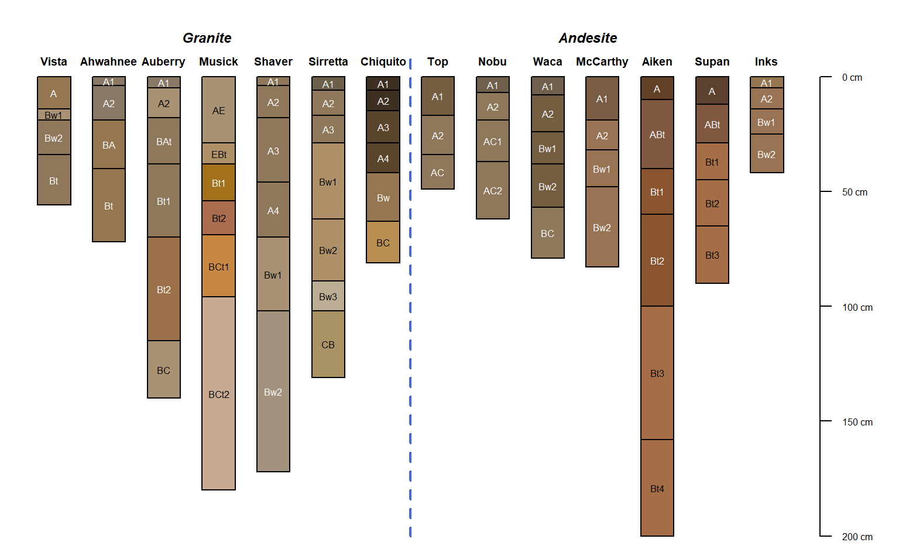
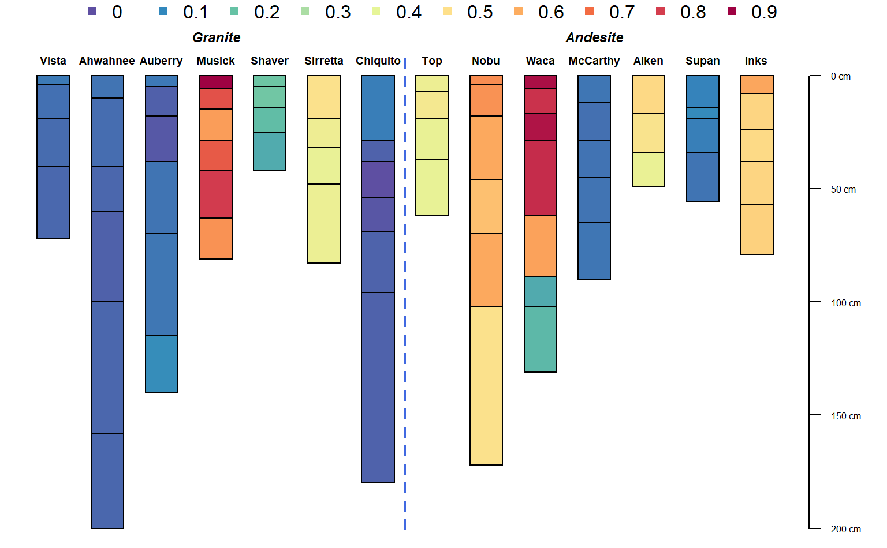
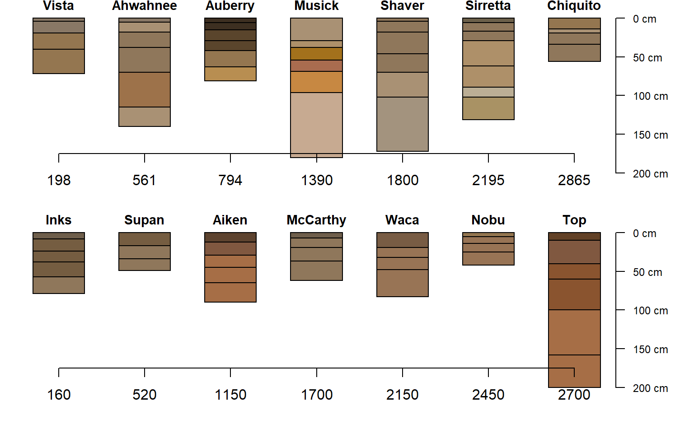

sierraTransect.RdSoil physical and chemical data associated with two bio-climatic sequences (granitic and andesitic parent material) from the western flank of the Sierra Nevada mountains.
data("sierraTransect")
The format is: Formal class 'SoilProfileCollection' [package "aqp"] with 11 slots ..@ idcol : chr "id" ..@ hzidcol : chr "hzID" ..@ hzdesgncol : chr "name" ..@ hztexclcol : chr(0) ..@ depthcols : chr [1:2] "top" "bottom" ..@ metadata :List of 5 .. ..$ aqp_df_class : chr "data.frame" .. ..$ depth_units : chr "cm" .. ..$ stringsAsFactors: logi FALSE .. ..$ original.order : int [1:70] 5 6 7 8 56 57 58 59 60 61 ... .. ..$ target.order : int [1:70] 5 6 7 8 56 57 58 59 60 61 ... ..@ horizons :'data.frame': 70 obs. of 36 variables: .. ..$ id : chr [1:70] "Vista" "Vista" "Vista" "Vista" ... .. ..$ name : chr [1:70] "A" "Bw1" "Bw2" "Bt" ... .. ..$ top : int [1:70] 0 14 19 34 0 4 19 40 0 5 ... .. ..$ bottom : int [1:70] 14 19 34 56 4 19 40 72 5 18 ... .. ..$ hz_boundary : chr [1:70] "AW" "AW" "AW" "AW" ... .. ..$ hue : chr [1:70] "10YR" "10YR" "10YR" "10YR" ... .. ..$ value : int [1:70] 5 6 5 5 5 5 5 5 5 6 ... .. ..$ chroma : int [1:70] 4 3 3 3 2 2 4 4 2 3 ... .. ..$ sand : num [1:70] 79 80 79 76 73 72 74 76 72 70 ... .. ..$ silt : num [1:70] 11 12 13 14 21 22 19 16 19 21 ... .. ..$ clay : num [1:70] 10 8 8 10 9 12 14 16 9 9 ... .. ..$ frags : int [1:70] 20 15 33 33 5 5 5 5 5 5 ... .. ..$ ex.K : num [1:70] 0.61 0.2 0.13 0.09 0.21 0.18 0.15 0.12 0.34 0.32 ... .. ..$ ex.Na : num [1:70] 0.02 0.03 0.05 0.08 0.03 0.02 0.03 0.02 0.02 0.02 ... .. ..$ ex.Mg : num [1:70] 1.07 0.65 0.78 0.83 0.32 0.34 0.28 0.27 0.91 0.76 ... .. ..$ ex.Ca : num [1:70] 8.57 4.31 4.49 4.81 4.47 3.98 3.45 2.56 5.95 5.03 ... .. ..$ CEC : num [1:70] 11.5 6.5 7 7.1 7.5 6.1 5.6 5.5 10.5 8.3 ... .. ..$ BS : int [1:70] 89 80 78 82 67 74 85 72 69 74 ... .. ..$ Si_o : num [1:70] 0.1 0.1 0.1 0.1 0.1 0.1 0.1 0.1 0.1 0.1 ... .. ..$ Fe_o : num [1:70] 0.6 0.7 0.7 0.6 0.7 0.7 0.6 0.5 0.8 0.7 ... .. ..$ Al_o : num [1:70] 0.3 0.4 0.4 0.4 0.7 0.7 0.6 0.5 0.9 0.8 ... .. ..$ Fe_d : num [1:70] 4.3 4.6 5.3 5.2 5.6 6.4 5.9 5.2 6.5 8.4 ... .. ..$ Fe_p : num [1:70] 0.2 0.1 0.1 0.1 0.3 0.2 0.1 0.1 0.4 0.2 ... .. ..$ Al_p : num [1:70] 0.2 0.1 0.1 0.1 0.2 0.1 0.1 0.1 0.6 0.3 ... .. ..$ soil_color : chr [1:70] "#947650FF" "#A99174FF" "#8F775BFF" "#8F775BFF" ... .. ..$ hzID : chr [1:70] "1" "2" "3" "4" ... .. ..$ Db : num [1:70] NA NA NA NA NA NA NA NA NA NA ... .. ..$ C : int [1:70] NA NA NA NA NA NA NA NA NA NA ... .. ..$ C_to_N : int [1:70] NA NA NA NA NA NA NA NA NA NA ... .. ..$ pH_H2O : num [1:70] NA NA NA NA NA NA NA NA NA NA ... .. ..$ pH_CaCl2 : num [1:70] NA NA NA NA NA NA NA NA NA NA ... .. ..$ pH_KCL : num [1:70] NA NA NA NA NA NA NA NA NA NA ... .. ..$ Al_d : num [1:70] NA NA NA NA NA NA NA NA NA NA ... .. ..$ P_ret : int [1:70] NA NA NA NA NA NA NA NA NA NA ... .. ..$ andic_index : num [1:70] NA NA NA NA NA NA NA NA NA NA ... .. ..$ Fe_o_to_Fe_d: num [1:70] 0.14 0.152 0.132 0.115 0.125 ... ..@ site :'data.frame': 14 obs. of 15 variables: .. ..$ id : chr [1:14] "Vista" "Ahwahnee" "Auberry" "Musick" ... .. ..$ elev : int [1:14] 198 561 794 1390 1800 2195 2865 2700 2450 2150 ... .. ..$ MAAT : num [1:14] 16.7 15 14.4 11.1 9.1 7.2 3.9 NA NA NA ... .. ..$ MAP : int [1:14] 33 57 62 91 101 108 127 152 140 135 ... .. ..$ geo : chr [1:14] "tonalite" "tonalite" "tonalite" "granodiorite" ... .. ..$ transect : Factor w/ 2 levels "Granite","Andesite": 1 1 1 1 1 1 1 2 2 2 ... .. ..$ precip : chr [1:14] NA NA NA NA ... .. ..$ MAT : num [1:14] NA NA NA NA NA NA NA 3 4.5 6 ... .. ..$ veg : chr [1:14] NA NA NA NA ... .. ..$ Fe_d_to_Fe_t : num [1:14] NA NA NA NA NA NA NA 0.32 0.25 0.22 ... .. ..$ notes : chr [1:14] NA NA NA NA ... .. ..$ effective.ppt_800: num [1:14] -486 -169 -123 230 428 ... .. ..$ rain.fraction_800: int [1:14] 99 99 98 91 83 71 54 58 67 67 ... .. ..$ MAAT_800 : num [1:14] 17.46 15.16 15.09 13.52 8.75 ... .. ..$ MAP_800 : int [1:14] 464 661 701 977 1025 1157 1322 1290 1426 1425 ... ..@ sp :Formal class 'SpatialPoints' [package "sp"] with 3 slots .. .. ..@ coords : num [1:14, 1:2] -120 -119 -119 -119 -119 ... .. .. .. ..- attr(*, "dimnames")=List of 2 .. .. .. .. ..$ : chr [1:14] "1" "2" "3" "4" ... .. .. .. .. ..$ : chr [1:2] "x" "y" .. .. ..@ bbox : num [1:2, 1:2] -121.2 37 -119.1 38.9 .. .. .. ..- attr(*, "dimnames")=List of 2 .. .. .. .. ..$ : chr [1:2] "x" "y" .. .. .. .. ..$ : chr [1:2] "min" "max" .. .. ..@ proj4string:Formal class 'CRS' [package "sp"] with 1 slot .. .. .. .. ..@ projargs: chr "+proj=longlat +datum=NAD83 +ellps=GRS80 +towgs84=0,0,0" ..@ diagnostic :'data.frame': 0 obs. of 0 variables ..@ restrictions:'data.frame': 0 obs. of 0 variables
These data were assembled from Dahlgren et al. (1997) and Rasmussen et al. (2007), with permission granted by lead authors, by D.E. Beaudette.
Original manuscripts and person communication with authors.
R.A. Dahlgren, J.L. Boettinger, G.L. Huntington, R.G. Amundson. Soil development along an elevational transect in the western Sierra Nevada, California, Geoderma, Volume 78, Issues 3–4, 1997, Pages 207-236.
Rasmussen, C., Matsuyama, N., Dahlgren, R.A., Southard, R.J. and Brauer, N. (2007), Soil Genesis and Mineral Transformation Across an Environmental Gradient on Andesitic Lahar. Soil Sci. Soc. Am. J., 71: 225-237.
data(sierraTransect) # tighter margins op <- par(mar=c(0,0,0,0)) # quick sketch plotSPC(sierraTransect, name.style = 'center-center', width=0.3)# split by transect par(mar=c(0,0,1,1)) groupedProfilePlot( sierraTransect, groups='transect', group.name.offset = -15, width=0.3, name.style='center-center' )# thematic groupedProfilePlot( sierraTransect, groups='transect', group.name.offset = -15, width=0.3, name.style='center-center', color='Fe_o_to_Fe_d' )# horizon boundary viz sierraTransect$hzd <- hzDistinctnessCodeToOffset(substr(sierraTransect$hz_boundary, 0, 1)) groupedProfilePlot( sierraTransect, groups='transect', group.name.offset = -15, width=0.3, name.style='center-center', color='Fe_o_to_Fe_d', hz.distinctness.offset='hzd')# split transects g <- filter(sierraTransect, transect == 'Granite') a <- filter(sierraTransect, transect == 'Andesite') g.order <- order(g$elev) a.order <- order(a$elev) # order (left -> right) by elevation par(mar=c(2,0,0,2), mfrow=c(2,1)) plot(g, width=0.3, name.style='center-center', cex.names=0.75, plot.order=g.order) axis(1, at=1:length(g), labels=g$elev[g.order], line=-1.5) plot(a, width=0.3, name.style='center-center', cex.names=0.75, plot.order=a.order)par(op)